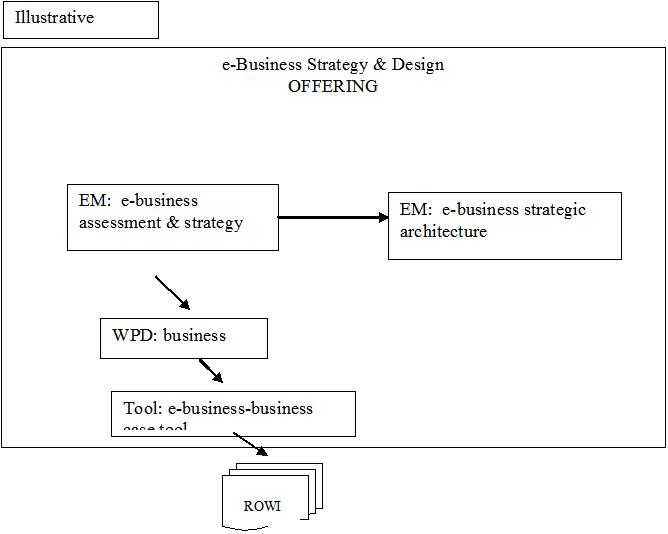
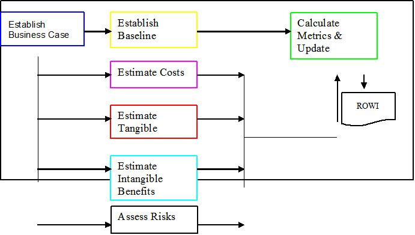
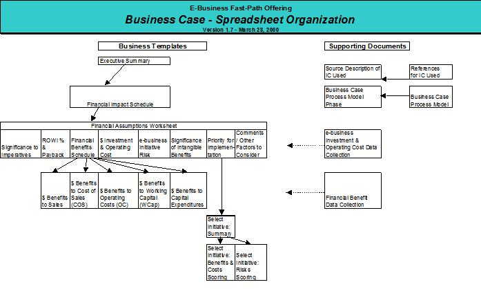
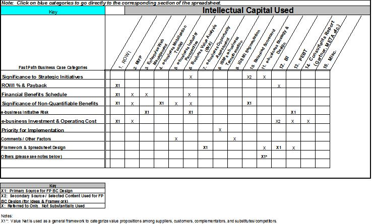
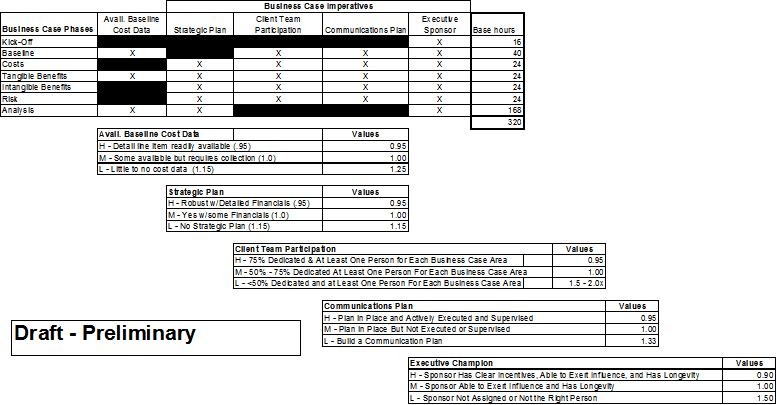
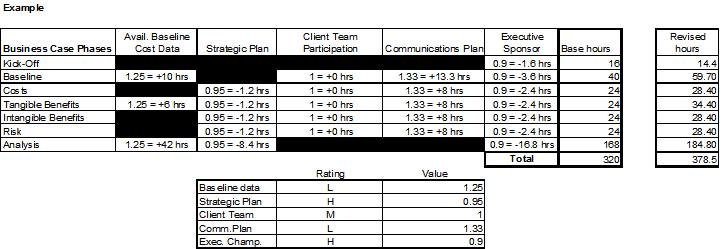

| Tool Mentor: e-business Business Case Tool |
 |
|
IntroductionThe tool contains all the necessary forms to collect, analyze and present the results of the Business Case (e.g. Business Case Work Product) in financial and non-financial terms. From a financial perspective, the tool calculates ROWI (return on Web-Investment), states the project/initiative financial benefit, reports intangible benefit impact, states the estimated e-business investment and operating costs, calculates the number of months for "double" the payback and presents the relative e-business initiative risks. The intent of the tool is to provide a repository for gathering financial and non-financial information throughout the life cycle of all projects from small to large. The tool is designed to facilitate the gathering of data by providing worksheets that can be distributed to client team members for completion or used as an interview guides for the IBM Consultants. The tool also provides a "point and click" navigation aid to access the data sheets from the WBS guide. This technique paper will provide the roadmap for using the tool and guidance on the data content, analysis and reporting. The key sections of the tool are:
StepsThe purpose of this technique paper is to guide the user through the use of an e-business – Business Case Tool to be used in the financial and business case analysis of e-business initiatives. Its intended use is with the e-business Strategy & Design Offering and the “Fast Path” version that is designed to deliver an e-business pilot within 12 to 16 weeks. The tool can be used to track and evaluate multiple e-business initiatives and pilots. The tool is also intended to be used End-to-End within an engagement to allow the project management team to gather initial data and refine the data with concrete results as the project matures.  EM = engagement model; WPD = Work Product; Tool: = tool used to gather and analyze valuation data Contexts of UseThe e-business – Business Case Tool can be used in context with and as output from several Business/Financial Work Products including:
PhasesThe following diagram shows the basic phases that define the process model for completing the e-business – business case tool. Note that the organization hierarchy of Phase, Activity and Task is used to comply with the nomenclature used by the authoring tool used for creating Work Products (WPD’s), Engagement Models (Em’s), Technique Papers and Templates. Process model

Phase 1 – Establish Business Case Team Purpose of this phase is to identify team members and assign project tasks and deliverables. Activities:
Assumptions:
Phase 2 – Establish Baseline Baseline metrics are the financial and operating data available from the client including
Activities:
Assumptions:
Phase 3 – Estimate Costs Costs include all direct, indirect and overhead types of costs for such categories as:
Activities:
Assumptions:
Phase 4 – Estimated Tangible Benefits Tangible benefits are positive financial impacts to existing or anticipated line items including the following:
Working capital benefits include positive, sustainable impact to balance sheet accounts (e.g. reduction in inventory, reduction in A/R balance and days outstanding, etc.) Capital expenditure benefits are reductions or elimination of existing or planned capital projects and budgets. Activities:
Assumptions:
Phase 5 – Estimate Intangible Benefits Intangible benefits include positive impact to the business in view of its customers, its internal business processes, its innovation and learning (e.g. of its employees). Some intangible benefits may be translated into financial measures given sufficient time to establish linkages to measurable financial levers. Activities:
Assumptions:
Phase 6 – Assess Risks Risks are the possible events or factors that could have a negative impact on the overall success of the project. Risk factors are assessed for the following categories:
Each risk is assessed in terms of severity of impact and the potential occurrence. Using these two measures, adjusted risk is calculated. Activities:
Assumptions:
Phase 7 – Calculate Metrics & Update Assumptions During this phase, the financial and non-financial valuation measures are calculated and analyzed. The assumptions are also reviewed and updated to ensure that all factors and measures are properly aligned with the initiative objectives and that all stakeholders and management teams are apprised of the results. Activities:
Assumptions:
ToolsThe e-business – Business Case Tool is designed with an internal roadmap to guide the user to the appropriate data sheet to be completed for each Phase defined above. The tool is written in Excel and provides hot links to help the consultant navigate to the appropriate worksheet from the following “Spreadsheet Organization”. Hotlinks are also provided to quickly help the consultant find reference materials that could be helpful for a specific client need. Simply scroll down to the IC source column heading (e.g. 1. ROWI) and click. The user is transferred to the specific reference material worksheet.  Validation and VerificationValidation and verification will be completed after a Rapid Services Deployment project candidate has been assigned and completed. ExamplesTo be provided Advice and GuidanceTo be added at a later date after initial After Action Review is complete. ReferencesSee the references page in the e-business –Business Case Tool. This is a Microsoft Excel program. Estimating ConsiderationsThe estimated time frame for completing the business model using the e-business – Business Case Tool is about 6-8 week elapsed time or a baseline estimate of 40 person-days. This is a preliminary estimate at this time and assumes that the client meets the “medium” expectations for the five-(5) key levers that affect consultant hours. These levers are: Available Baseline Cost Data; Status of a Strategic Business Plan; Client team participation; Client’s communication plans; and, Executive Champion for the initiative. Assumptions for the following baseline estimated hours are:
The steps for using this guideline is includes the following:
Estimating Guideline Template: Here is an example of an evaluation of a client’s readiness to support the business case: Availability of Baseline Cost Data = L Strategic Plan = H Client Team Participation = M Communication Plan = L Executive Champion = H 
|
| Supporting Materials |
|---|
| © Copyright IBM Corp. 1987, 2012 All Rights Reserved Property of IBM These materials are intended only for use as part of an IBM engagement |